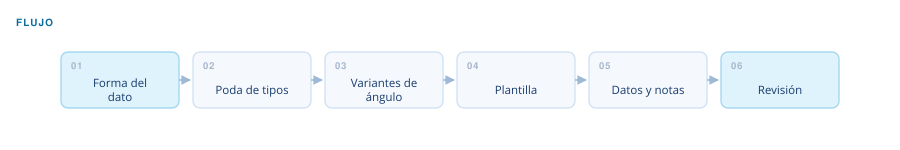
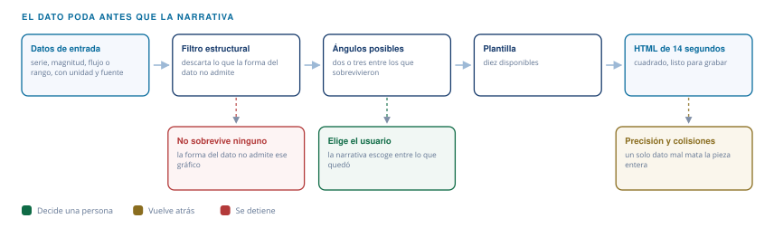

Automatización financiera · Good Finance Charts V3.2
Visualización financiera animada
Gráficos animados con acabado editorial, listos para grabar y publicar.
El problema
Elegir el tipo de gráfico por gusto produce visualizaciones que el dato no sostiene: un Sankey cuyos flujos no cuadran, un ratio que no justifica una comparación de magnitud, una tendencia con tres puntos.
Entra
Series temporales, magnitudes, flujos o rangos, con unidades y fuente.
Sale
Archivo HTML de una sola pieza, ciclo de 14 segundos en formato cuadrado, listo para grabar en pantalla y subir como video.
El flujo
Seis pasos que arrancan por el dato y no por el gráfico. Los dos primeros no eligen nada: descartan. La narrativa aparece recién en el tercero, y solo entre lo que quedó en pie.

Qué decide y cómo
El orden es deliberado: primero se descarta por la forma del dato y recién después se elige por narrativa. Al revés se obtienen gráficos que el dato no sostiene.

Estructura
Un filtro estructural descarta primero los tipos de gráfico que la forma del dato no admite.
Ángulo
Entre los que sobreviven se proponen dos o tres ángulos narrativos y el usuario elige.
Tema
Fondo claro por defecto; variante oscura de marca disponible.
Control de calidad
Verificación de precisión contra la fuente y revisión de colisiones de texto antes de entregar. Un solo dato mal mata la publicación entera.
Arquitectura
- 10 plantillas de gráfico
- SVG y CSS sin dependencias
- Plotly para waterfall y treemap
- d3-sankey para flujos proporcionales
Qué construí
Diseñé el filtro de forma del dato, la tabla de ruteo y las diez plantillas.
¿Un flujo así para tu proceso?
Este nació de un cuello de botella real. Si tienes un proceso financiero que se repite cada mes, probablemente se pueda sistematizar igual.